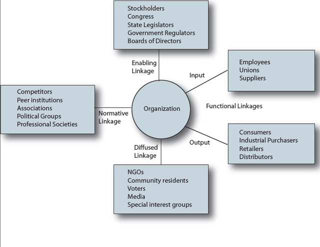

Experts in stakeholder management and public relations have provided many different ways of identifying key stakeholders or publics. At the heart of these attempts is the question, “How much attention does each stakeholder group deserve or require?”This section is revised with permission from Rawlins (2006).
Because it is impossible that all stakeholders will have the same interests in and demands on the organization, Winn specified that stakeholder management be about managing stakeholders’ potentially conflicting interests.Winn (2001), pp. 133–166. Once organizations have identified their stakeholders, there is a struggle for attention: who to give it to, who to give more to, and who to ignore. Sacrificing the needs of one stakeholder for the needs of the other is a dilemma with which many organizations struggle. When these conflicts arise it is important to the success of the organization that it has prioritized each stakeholder according to the situation.
This chapter will provide a model that moves from the broadest attempts at identifying all stakeholders, to the more specific need of identifying key publics for communication strategies. The model is situational, and priority of stakeholders and publics will change according to the situation.
A stakeholderA group or an individual who is affected by or who can affect the success of an organization, such as employees, customers, shareholders, communities, and suppliers. is a group or individual who is affected by or can affect the success of an organization.Freeman (1984). The definition has been expanded to include groups who have interests in the corporation, regardless of the corporation’s interest in them. Employees, customers, shareholders, communities, and suppliers are those most commonly classified as stakeholders within an organization
Grunig and Repper differentiated the terms “stakeholder” and “public” in the following way: Organizations choose stakeholders by their marketing strategies, recruiting, and investment plans, but “publics arise on their own and choose the organization for attention.”Grunig and Repper (1992), p. 128. This classification relied on John Dewey’s definition of a public: That it is a group of people who face a similar problem, recognize the problem, and organize themselves to do something about it.Dewey (1927). Therefore, publics organize from the ranks of stakeholders when they recognize an issue and act upon it.
Organization should attempt to identify all stakeholders before narrowing them by their attributes. One way to do this is by considering how these groups are linked to the organization. A model by Grunig and Hunt breaks these links into four groups by linkage: enabling, functional, diffused, and normative stakeholders (see Figure 7.1 "Grunig’s Organizational Linkage Model").Grunig and Hunt (1984). Grunig and Hunt developed the model based on the work of Esman (1972); Evan (1976); Parsons (1976).
Going through the linkage model should help an organization identify all its stakeholders. The diffused linkage stakeholders would be different according to situation, but the enabling, functional, and normative linkage stakeholders are likely to be constant.
Figure 7.1 Grunig’s Organizational Linkage Model
Source: Rawlins (2006) adapted and used with permission from Grunig.